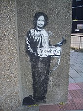

Banksy started as a freehand graffiti artist in 1990–1994[31] as one of Bristol's DryBreadZ Crew (DBZ), with two other artists known as Kato and Tes.[32] He was inspired by local artists and his work was part of the larger Bristol underground scene with Nick Walker, Inkie and 3D.[33][34] During this time he met Bristol photographer Steve Lazarides, who began selling Banksy's work, later becoming his agent.[35] By 2000 he had turned to the art of stencilling after realising how much less time it took to complete a work. He claims he changed to stencilling while hiding from the police under a rubbish lorry, when he noticed the stencilled serial number[36] and by employing this technique, he soon became more widely noticed for his art around Bristol and London.[36] He was the goalkeeper for the Easton Cowboys and Cowgirls football team in the 1990s, and toured with the club to Mexico in 2001.[37] Banksy's first known large wall mural was The Mild Mild West painted in 1997 to cover advertising of a former solicitors' office on Stokes Croft in Bristol. It depicts a teddy bear lobbing a Molotov cocktail at three riot police.[38]
Exhibitions (2002–2003)
In 2003, at an exhibition called Turf War, held in a London warehouse, Banksy painted on animals. At the time he gave one of his very few interviews, to the BBC's Nigel Wrench.[42] Although the RSPCA declared the conditions suitable, an animal rights activist chained herself to the railings in protest.[43] An example of his subverted paintings is Monet's Water Lily Pond, adapted to include urban detritus such as litter and a shopping trolley floating in its reflective waters; another is Edward Hopper's Nighthawks, redrawn to show that the characters are looking at a British football hooligan, dressed only in his Union Flag underpants, who has just thrown an object through the glass window of the cafe. These oil paintings were shown at a twelve-day exhibition in Westbourne Grove, London in 2005.[44]

IMAGE: "Charles Manson"
A stencil of Charles Manson in a prison suit, hitchhiking to anywhere, Archway, London.